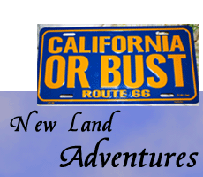
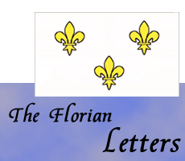

Adventures Since Writing The Most Traveled Man on Earth |
|
Lew hasn't stopped traveling or having adventures since writing The Most Traveled Man on Earth. He became a leader in the search for fellow adventurer Steve Fossett, who went missing in his light plane, after departing the famous Flying M Ranch in Nevada. Lew spent almost a year researching the case and serving as co-leader of a private search to find Steve. This led to Lew becoming a co-founder of the new, private, volunteer Missing Aircraft Search Team (M.A.S.T.), and to another successful search, for the missing Cessna N2700Q in Arizona.
Lew also kept traveling on land and at sea, cruising down Route 66 in the "Bullitt" Mustang, learning the secrets of the Vatican from a Papal Swiss Guard, and cruising through the Caribbean, Baltic, Mediterranean and other seas on cruise ships and tall ships. Genealogy and history are great sources for adventures and excitement. Lew pursued these topics by searching for and finding the lost ghost town of his great-ggg-grandfather in Alabama, and researching the letters, art, and art collection of his French great-ggg-grandparents, the Florian family, who fled the guillotine and made it to freedom in New Orleans in 1810. The links below will take you to these and many other exciting adventures. Happy travels! |



|


Rollover images to view
|
| online degree programs |